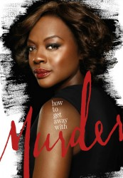

")
 
 IMDB-Wertung: 8.3 / 10
IMDB-Wertung: 8.3 / 10  Metascore:
Metascore: 
Die brillante Strafverteidigerin und Kriminal-Professorin Annalise Keating hat in ihrer bisherigen Karriere noch nie einen Fall vor Gericht verloren. In ihrer Vorlesung, die sie „How to Get Away with Murder“ nennt, bestimmt sie fünf Studenten, die sie fernab der Theorie bei ihren realen Fällen unterstützen sollen. Und ihr scheint jedes Mittel recht, um ihre Fälle zu gewinnen. In jeder Episode gilt es, einen Fall zu gewinnen, der auf den ersten Blick bereits verloren scheint…
Jahr: 2014
Dauer: 43 Minuten
FSK: 16
Land: USA Studio: Disney-ABC Domestic TelevisionTonspuren: DD5.1 - ,
Untertitel:
Auflösung: 720p (1280x720) Größe: 1536 MB
Genre: Thriller, Drama, Krimi, Mystery, TV-Serie
Regisseur: Bill D'Elia, Mike Listo,  Laura Innes, Stephen Williams, Michael Offer, Jennifer Getzinger, Stephen Cragg, Jet Wilkinson, Zetna Fuentes, Debbie Allen,
Laura Innes, Stephen Williams, Michael Offer, Jennifer Getzinger, Stephen Cragg, Jet Wilkinson, Zetna Fuentes, Debbie Allen,  Eric Stoltz, Randy Zisk, Kevin Bray, Rob Hardy, Michael Katleman, John Terlesky, Sharat Raju, Michael Smith, Kevin Rodney Sullivan, Jann Turner, Hanelle M. Culpepper, Cherie Nowlan, Nicole Rubio
Eric Stoltz, Randy Zisk, Kevin Bray, Rob Hardy, Michael Katleman, John Terlesky, Sharat Raju, Michael Smith, Kevin Rodney Sullivan, Jann Turner, Hanelle M. Culpepper, Cherie Nowlan, Nicole Rubio
Drehbuch: Daniel Coyle
Soundtrack:
Darsteller:
 Viola Davis als Annalise Keating
Viola Davis als Annalise Keating Billy Brown als Nate Lahey
Billy Brown als Nate Lahey Alfred Enoch als Wes Gibbins
Alfred Enoch als Wes Gibbins Tom Verica als Sam Keating
Tom Verica als Sam Keating Amy Okuda als Catherine Hapstall
Amy Okuda als Catherine Hapstall Sarah Burns als Emily Sinclair
Sarah Burns als Emily Sinclair Benito Martinez als A.D.A. Todd Denver
Benito Martinez als A.D.A. Todd Denver Famke Janssen als Eve Rothlow
Famke Janssen als Eve Rothlow Dameon Clarke als Detective Mumford
Dameon Clarke als Detective Mumford John Posey als Bill Millstone
John Posey als Bill Millstone Roxanne Hart als Sylvia Mahoney
Roxanne Hart als Sylvia Mahoney Alysia Reiner als D.A. Wendy Parks
Alysia Reiner als D.A. Wendy Parks Adam Arkin als Wallace Mahoney
Adam Arkin als Wallace Mahoney Mark L. Taylor als Vince Levin
Mark L. Taylor als Vince Levin Marcia Gay Harden als Hannah Keating
Marcia Gay Harden als Hannah Keating L. Scott Caldwell als Jasmine
L. Scott Caldwell als JasmineDatei: X:\HD-Serien\How to Get Away with Murder\S01\How to Get Away with Murder S01E01 Das beste Team.mkv seit 30.03.2017
Festplatte: HD Serien(A-H)
 Es gibt insgesamt 182 Filme in der Gruppe 'HD-Serien'
Es gibt insgesamt 182 Filme in der Gruppe 'HD-Serien'